◉ Loops utilizando for
➤ As estruturas de repetição são recursos das linguagens de programação responsáveis por executar
um bloco de código repetidamente através de determinadas condições especificas.
O Python contém dois tipos de estruturas de repetição: for e while.
➤ Vamos iniciar pelos detalhes das estruturas de repetição, ou melhor dizendo, os loops utilizando o for.
O for é utilizado para percorrer ou iterar sobre uma sequência de dados (seja esse uma lista, uma tupla, uma string), executando um conjunto de instruções em cada item.
Como você já sabe, o Python utiliza identação para separar blocos de código: nos loops utilizando for não é diferente.
Sua sintaxe básica é: for nome variável in iterável. Vamos entender:
➤ nome variável é o nome da variável que vai receber os elemento de iterável.
➤ iterável é o container de dados sobre o qual vamos iterar, podendo ser: uma lista, uma tupla, uma string, um dicionário, entre outros.
Vamos ver um exemplo, para facilitar nossa vida!
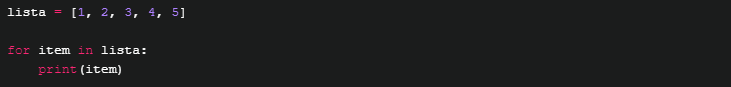
Vamos entender passo a passo:
➤ Na primeira iteração, item vai receber o valor do primeiro elemento da lista lista, que é 1.
Portanto print(item) vai mostrar o valor 1.
➤ Na segunda iteração, item vai receber o valor do segundo elemento da lista lista, que é 2.
Portanto print(item) vai mostrar o valor 2.
➤ E assim por diante até o último valor, que é 5.
Existe outra forma de se utilizar o for que é utilizando a estrutura for/else.
Adicionar o else ao final do for nos possibilita executar um bloco de código após o iterável ter sido completamente percorrido.
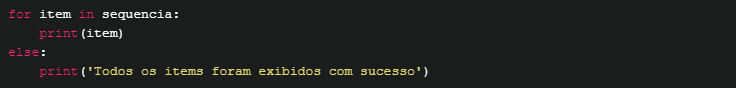
➤ Agora vamos ver alguns exemplo de como podemos percorrer tipos de dados diferentes utilizando o for.
Para iterar sobre Listas e imprimir cada item da lista:
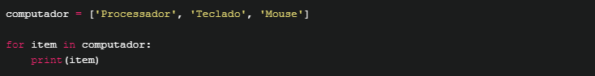
A saída será:
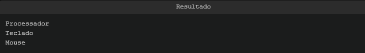
➤ Podemos também percorrer os dicionários do Python (que são uma estrutura de dados muito importante).
Para isso, podemos fazer da seguinte maneira:
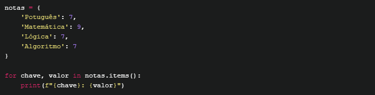
O resultado será:
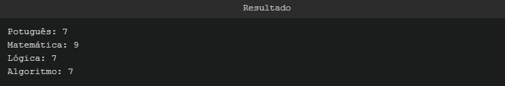
➤ Também podemos percorrer strings, pois elas também são um tipo iterável:
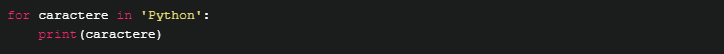
O Python vai dividir a string 'Python' nos caracteres que a compoem e o resultado do loop for será o seguinte:
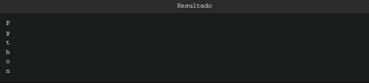
◉ Loops utilizando while
➤ O while é uma estrutura de repetição utilizada quando queremos que determinado bloco de código seja executado
ENQUANTO (do inglês while) determinada condição for satisfeita.
Em outras palavras: só saia da estrutura de repetição quando a condição não for mais satisfeita.
Sua sintaxe básica é:
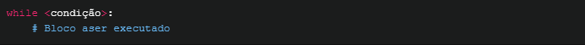
Aqui, condição é uma expressão que pode ser reduzida à True ou False, podendo ser:
➤ A verificação do valor de uma variável;
➤ Determinada estrutura de dados alcançar um tamanho;
➤ O retorno de uma função se igualar a determinado valor;
➤ Algum valor externo ser alterado (por exemplo um valor armazenado em Banco de Dados).
Vamos entender melhor com um exemplo:
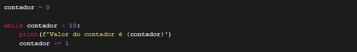
Resultando em:
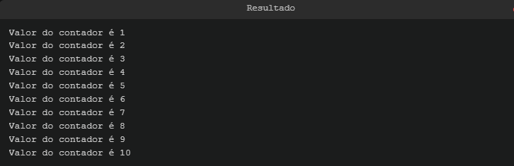
Ou seja, a variável contador está sendo incrementada a cada vez que o while executa seu código.
Quando ele alcançar o valor 10, a condição contador < 10 não será mais satisfeita, finalizando o bloco while!
Assim como no for, podemos utilizar o else também nos loops while.
Vamos usar o mesmo código do exemplo acima para você entender a diferença:
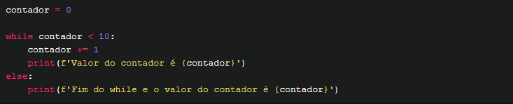
O que resultará em:
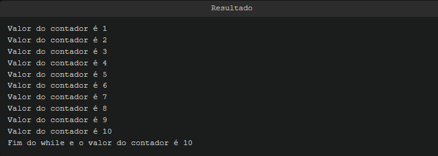
◉ Auxiliadores
Existem 3 comandos que nos auxiliam quando queremos alterar o fluxo de uma estrutura de repetição.
São eles: break, continue e pass.
Esses auxiliares não funcionam diretamente com o while, e por isso encaixar eles no bloco principal do while
pode ser tanto quanto inútil, já que a condição especificada encerra o loop.
➤ Auxiliador break
É usado para finalizar um loop, isto é, é usado para parar sua execução.
Geralmente vem acompanhado de alguma condição para isso, com um if.
Veja um exemplo:
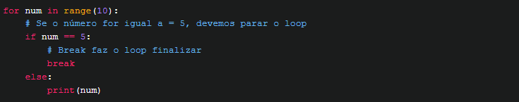
Saída do código acima:>
Percebeu que o loop não chegou ao final?! Para isso utilizamos o break! :wink:>
Já com while, também podemos utilizar o break em uma condição utilizando if, assim:>
Quando a variável atribuir o valor 4 o laço é finalizado pelo break, encerrando o loop. Resultando em:>
➤ Auxiliador continue
Funciona de maneira similar ao break, contudo ao invés de encerrar o loop ele pula todo código
que estiver abaixo dele (dentro do loop) partindo para a próxima iteração.
Vamos ao exemplo:
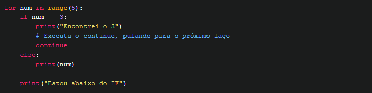
Repare na saída abaixo. Repare que quando a condição num == 3 for satisfeita, a string "Estou abaixo do IF" não será exibida:
Em loops com while a lógica é a mesma. O continue irá finalizar o loop atual, iniciando novamente no início do while.
Veja o exemplo:
O resultado desse código é que o 3 não apareça, pois o print() que imprime os números está abaixo do continue.
Portanto a saída será:
➤ Auxiliador pass
O pass nada mais é que uma forma de fazer um código que não realiza operação nenhuma.
Mas calma, ele tem uma razão de existir no Python!
Como os escopos de Classes, Funções, If/Else e loops for/while são definidos pela indentação do código (e não por chaves {}
como geralmente se vê em outras linguagens de programação), usamos o pass para dizer ao Python que o bloco de código está vazio.
Veja alguns exemplos:
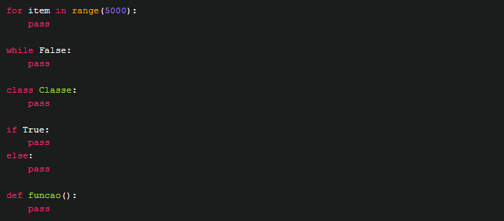
Caso não utilizemos o pass, veja o que acontece:
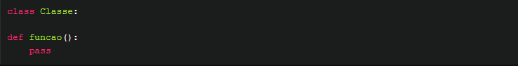
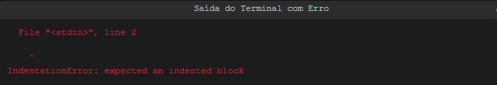
Isso acontece pois o Python entende que as próximas linhas de código fazem parte do mesmo escopo,
mas como não estão indentadas um erro IndentationError é lançado.
➤ A função range
Essa função é de grande ajuda quando o tema é repetição, laços, for etc.
Ela permite especificar o inicio de uma sequência, o passo (ou pulo) e valor final.
Com isso, o Python nos retorna uma sequência de números para que possamos iterar!
Sua sintaxe pode ter as seguintes três formas, sendo que seu único parâmetro obrigatório é o fim:
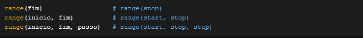
É importante ressaltar que na versão 3.x do Python, a função range() retorna um objeto iterável e não mais uma lista com elementos,
por essa razão devemos converter o retorno para listas com a função list().
Veja alguns exemplos de como criar listas com range:
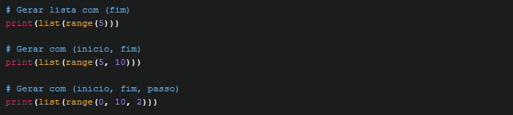
Resultando do código acima:
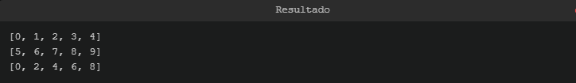
Utilizando range
Sabendo que a estrutura de repetição for executa um ciclo para cada elemento de um iterável,
e a função range é um iterável, podemos criar uma harmonia perfeita entre esses dois:
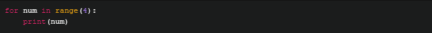
O código acima irá imprimir a sequência de 4 itens especificado no range:
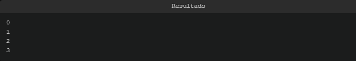
O range não se aplica diretamente ao while, porém um exemplo um pouco mais complexo pode demonstrar eles juntos:
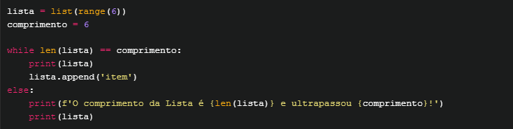
Saída:
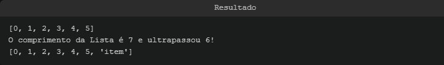
Explicando: basicamente ele verifica se o tamanho da lista é igual a 6 itens.
Após a primeira verificação ele adiciona mais um item (item), assim modificando seu comprimento e encerrando o laço!